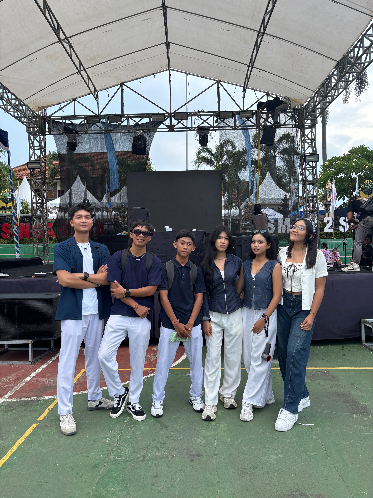
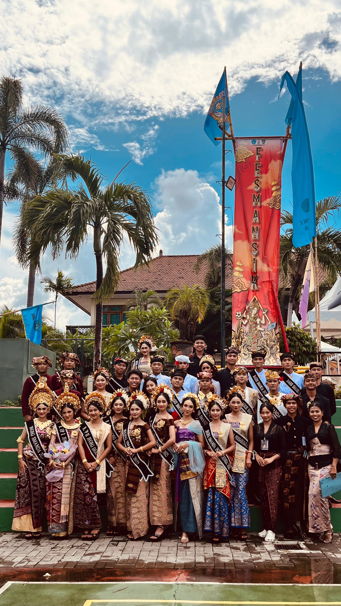
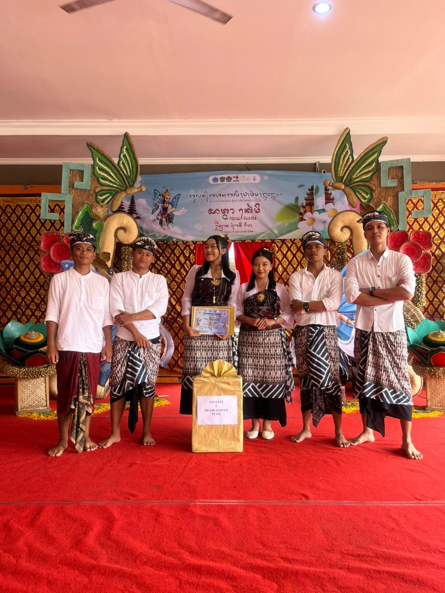

Biasa dipanggil Risky. Mahasiswa Program Studi Ilmu Komputer yang tertarik pada dunia IT, khususnya bidang cybersecurity. Halaman ini adalah profil singkat sebagai bagian dari tugas pengenalan diri kelompok.
"Earth without art is just eh", bagi saya musik bukan hanya sekedar sebuah seni tapi juga cara untuk mengekspresikan perasaan pemain.
#wegogymmmm.
makin banyak error makin seru🔥🔥🔥🔥.
Menjelajah alam, menikmati suasana, dan cari cerita baru di setiap perjalanan.
Saya memilih jurusan Teknik Informatika karena tertarik pada dunia IT, terutama bidang cybersecurity. Keamanan siber adalah bidang yang terus berkembang dan menantang — mempelajari bagaimana sistem, jaringan, dan data dilindungi dari ancaman membuat saya ingin memperdalam ilmu di bidang ini. Program Studi Ilmu Komputer dipilih karena memberi fondasi kuat di logika pemrograman, sistem, dan jaringan.
Menjadi seorang cybersecurity specialist yang tidak hanya paham tentang keamanan sistem dan data, tetapi juga terus belajar mengikuti perkembangan teknologi. Saya ingin mengembangkan kemampuan di bidang cybersecurity, mencoba berbagai pengalaman baru, dan suatu saat bisa menciptakan solusi teknologi yang bermanfaat serta membantu menjaga keamanan dunia digital.


